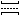
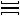
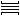
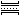
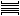
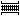
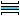

Effacer
EffacerPour sélectionner l'effaceur de ponts.
Pont vertical avec un sentier ou hors piste
Pour sélectionner le pont correspondant à un pont vertical avec un sentier ou hors piste.
 Pont horizontal avec un sentier ou hors piste
Pour sélectionner le pont correspondant à un pont horizontal avec un sentier ou hors piste.
Pont vertical avec un chemin
Pour sélectionner le pont correspondant à un pont vertical avec un chemin.
 Pont horizontal avec un chemin
Pour sélectionner le pont correspondant à un pont horizontal avec un chemin.
Pont vertical avec une route
Pour sélectionner le pont correspondant à un pont vertical avec une route.
 Pont horizontal avec une route
Pour sélectionner le pont correspondant à un pont horizontal avec une route.
Pont vertical avec une route nationale
Pour sélectionner le pont correspondant à un pont vertical avec une route nationale.
 Pont horizontal avec une route nationale
Pour sélectionner le pont correspondant à un pont horizontal avec une route nationale.
Pont vertical avec une route avec séparateur central
Pour sélectionner le pont correspondant à un pont vertical avec une route avec séparateur central.
 Pont horizontal avec une route avec séparateur central
Pour sélectionner le pont correspondant à un pont horizontal avec une route avec séparateur central.
Pont vertical avec une voie de chemin de fer
Pour sélectionner le pont correspondant à un pont vertical avec une voie de chemin de fer.
 Pont horizontal avec une voie de chemin de fer
Pour sélectionner le pont correspondant à un pont horizontal avec une voie de chemin de fer.
Pont vertical avec une rivière
Pour sélectionner le pont correspondant à un pont vertical avec une rivière.
 Pont horizontal avec une rivière
Pour sélectionner le pont correspondant à un pont horizontal avec une rivière.